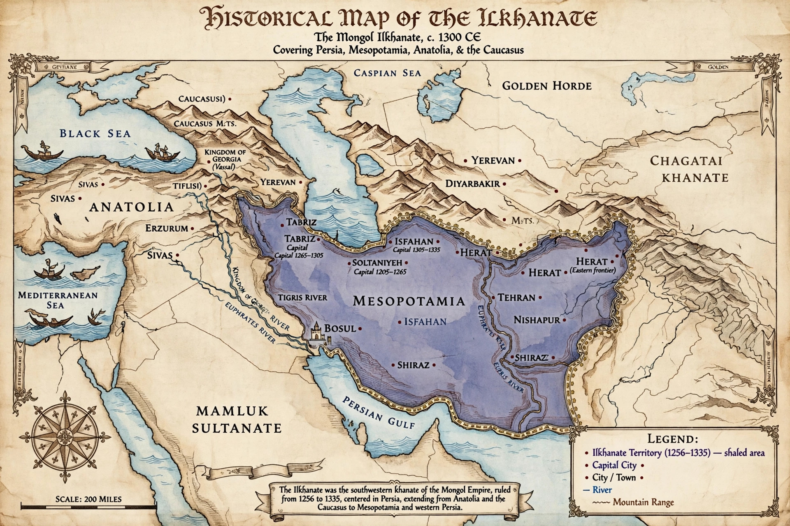

| Ilkhanate | |
|---|---|
| Existence | 1256 – 1335 |
| Capital | Maragheh; Tabriz; Soltaniyeh |
| Founder | Hülegü Khan |
| Religion | Buddhism/Shamanism, later Islam (from 1295) |
| Common languages | Persian, Mongolian, Arabic, Turkic |
The Ilkhanate, also spelled Il-khanate, known to the Mongols as Hülegü Ulus, was a Mongol khanate founded in the southwestern territories of the Mongol Empire. It was ruled by the Il-Khans ("subordinate khans") of the House of Hülegü, who governed Persia, Mesopotamia, much of Anatolia, and the Caucasus from 1256 until the khanate's disintegration in 1335. The Ilkhanate is counted among the four successor states of the Mongol Empire, alongside the Yuan dynasty, the Chagatai Khanate, and the Golden Horde.
Hülegü, brother of the Great Khan Möngke, was sent west in 1253 to subdue the remaining unconquered lands of Islam. He destroyed the Nizari Ismaili state of Alamut in 1256 and sacked Baghdad in 1258, extinguishing the Abbasid Caliphate — an event remembered as one of the great catastrophes of Islamic history. His forces took Syria in 1260, but after Möngke's death Hülegü withdrew eastward; the army left behind under Kitbuqa was destroyed by the Egyptian Mamluks at the Battle of Ain Jalut, which fixed the Ilkhanid frontier on the Euphrates.
The early Ilkhans patronised Buddhism and shamanism and courted Christian Europe as an ally against the Mamluks; embassies reached the courts of France and England. In 1295 Ghazan Khan converted to Islam, and the state took on a distinctly Perso-Islamic character. Under Ghazan and his vizier Rashid al-Din, the Ilkhanate saw sweeping fiscal reforms and a cultural renaissance: Rashid al-Din's Jami' al-tawarikh ("Compendium of Chronicles") was the first history of the whole known world, and the court astronomers of the Maragheh observatory, founded under Nasir al-Din al-Tusi, advanced mathematical astronomy. Öljaitü built the new capital of Soltaniyeh, whose great mausoleum dome still stands.
After the death of Abu Sa'id in 1335 without an heir, the Ilkhanate fragmented among rival regional dynasties — Jalayirids, Chobanids, Muzaffarids, and others — leaving Persia divided until the rise of Timur at the end of the century.